TimeSeriesMatrix: Matrix Basics#
TimeSeriesMatrix is a 3-dimensional array container that extends SeriesMatrix for TimeSeries (shape: Nrow × Ncol × Nsample).
TimeSeries-compatible aliases such as
dt / t0 / timesElement access returns
TimeSeries(tsm[i, j])Time-domain processing (detrend/bandpass/resample …) applied element-wise
Spectral analysis such as FFT/PSD/ASD and coherence (returns
FrequencySeriesMatrix)Display methods (
plot,step,repr,_repr_html_) work out of the box
In this notebook, we do not define additional utility functions but directly call class methods to verify their behavior.
import warnings
warnings.filterwarnings("ignore", category=UserWarning)
warnings.filterwarnings("ignore", category=DeprecationWarning)
import matplotlib.pyplot as plt
import numpy as np
from astropy import units as u
from gwexpy.timeseries import TimeSeries, TimeSeriesMatrix
Prepare Representative Data#
Create a 2×2
TimeSeriesMatrixand checkdt/t0/timesand metadata (unit/name/channel).
rng = np.random.default_rng(0)
# Sample configuration
n = 1024
dt = (1 / 256) * u.s
t0 = 0 * u.s
t = (np.arange(n) * dt).to_value(u.s)
tone10 = np.sin(2 * np.pi * 10 * t)
tone20 = np.sin(2 * np.pi * 20 * t + 0.3)
data = np.empty((2, 2, n), dtype=float)
data[0, 0] = 0.5 * tone10 + 0.05 * rng.normal(size=n)
data[0, 1] = 0.5 * tone20 + 0.05 * rng.normal(size=n)
data[1, 0] = 0.3 * tone10 + 0.3 * tone20 + 0.05 * rng.normal(size=n)
data[1, 1] = 0.2 * tone10 - 0.4 * tone20 + 0.05 * rng.normal(size=n)
units = np.full((2, 2), u.V)
names = [["ch00", "ch01"], ["ch10", "ch11"]]
channels = [["X:A", "X:B"], ["Y:A", "Y:B"]]
tsm = TimeSeriesMatrix(
data,
dt=dt,
t0=t0,
units=units,
names=names,
channels=channels,
rows={"r0": {"name": "row0"}, "r1": {"name": "row1"}},
cols={"c0": {"name": "col0"}, "c1": {"name": "col1"}},
name="demo",
)
display(tsm)
tsm.plot();
SeriesMatrix: shape=(2, 2, 1024), name='demo'
- epoch: 0.0 s
- x0: 0.0 s, dx: 0.00390625 s, N_samples: 1024
- xunit: s
Row Metadata
| name | channel | unit | |
|---|---|---|---|
| key | |||
| r0 | row0 | ||
| r1 | row1 |
Column Metadata
| name | channel | unit | |
|---|---|---|---|
| key | |||
| c0 | col0 | ||
| c1 | col1 |
Element Metadata
| unit | name | channel | row | col | |
|---|---|---|---|---|---|
| 0 | V | ch00 | X:A | 0 | 0 |
| 1 | V | ch01 | X:B | 0 | 1 |
| 2 | V | ch10 | Y:A | 1 | 0 |
| 3 | V | ch11 | Y:B | 1 | 1 |
Various Input Patterns (Constructor Examples)#
In addition to dt/t0, we verify sample_rate or times, 2D lists of TimeSeries, Quantity input, etc.
print("=== TimeSeriesMatrix Constructor Examples ===")
times = tsm.times
# Case 1: Specify sample_rate (instead of dt)
tsm_sr = TimeSeriesMatrix(
data,
sample_rate=256 * u.Hz,
t0=t0,
units=units,
names=names,
channels=channels,
)
print("case1 sample_rate", "dt", tsm_sr.dt, "sample_rate", tsm_sr.sample_rate)
# Case 2: Specify times (also supports irregular sampling)
tsm_times = TimeSeriesMatrix(data, times=times, units=units, names=names)
print("case2 times", "dt", tsm_times.dt, "t0", tsm_times.t0, "N", tsm_times.N_samples)
# Case 3: Construct from a 2D list of TimeSeries
ts00 = TimeSeries(data[0, 0], times=times, unit=u.V, name="ch00", channel="X:A")
ts01 = TimeSeries(data[0, 1], times=times, unit=u.V, name="ch01", channel="X:B")
ts10 = TimeSeries(data[1, 0], times=times, unit=u.V, name="ch10", channel="Y:A")
ts11 = TimeSeries(data[1, 1], times=times, unit=u.V, name="ch11", channel="Y:B")
tsm_from_ts = TimeSeriesMatrix([[ts00, ts01], [ts10, ts11]])
print("case3 from TimeSeries", tsm_from_ts.shape, "dt", tsm_from_ts.dt)
# Case 4: Quantity input (units are automatically set)
tsm_q = TimeSeriesMatrix((data * u.mV), dt=dt, t0=t0)
print("case4 Quantity meta unit", tsm_q.meta[0, 0].unit)
# Exception: dt and sample_rate / t0 and epoch cannot be specified simultaneously
for kwargs in [
dict(dt=dt, sample_rate=256 * u.Hz, t0=t0),
dict(dt=dt, t0=t0, epoch=t0),
]:
try:
_ = TimeSeriesMatrix(data, **kwargs)
except Exception as e:
print("error", kwargs, "->", type(e).__name__, e)
=== TimeSeriesMatrix Constructor Examples ===
case1 sample_rate dt 0.00390625 s sample_rate 256.0 Hz
case2 times dt 0.00390625 s t0 0.0 s N 1024
case3 from TimeSeries (2, 2, 1024) dt 0.00390625 s
case4 Quantity meta unit mV
error {'dt': <Quantity 0.00390625 s>, 'sample_rate': <Quantity 256. Hz>, 't0': <Quantity 0. s>} -> ValueError give only one of sample_rate or dt
error {'dt': <Quantity 0.00390625 s>, 't0': <Quantity 0. s>, 'epoch': <Quantity 0. s>} -> ValueError give only one of epoch or t0
Indexing and Slicing#
tsm[i, j]returns aTimeSeriesSlicing returns a
TimeSeriesMatrixCan also access via row/col labels
s00 = tsm[0, 0]
print("[0,0]", "type", type(s00), "dt", s00.dt, "t0", s00.t0, "unit", s00.unit)
print("[0,0]", "name", s00.name, "channel", s00.channel)
s00.plot(xscale="seconds")
s01 = tsm["r0", "c1"]
print("[r0,c1]", "name", s01.name, "channel", s01.channel)
sub = tsm[:, 0]
print("tsm[:,0] ->", type(sub), sub.shape)
sub.plot(subplots=True, xscale="seconds");
[0,0] type <class 'gwexpy.timeseries.timeseries.TimeSeries'> dt 0.00390625 s t0 0.0 s unit V
[0,0] name ch00 channel X:A
[r0,c1] name ch01 channel X:B
tsm[:,0] -> <class 'gwexpy.timeseries.matrix.TimeSeriesMatrix'> (2, 1, 1024)
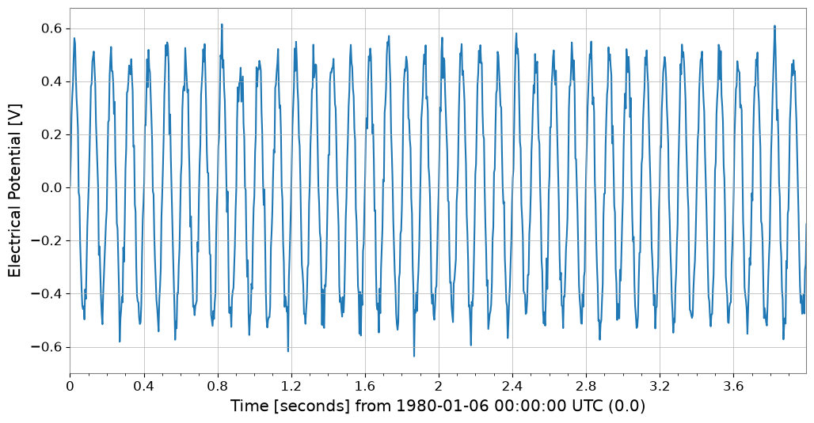
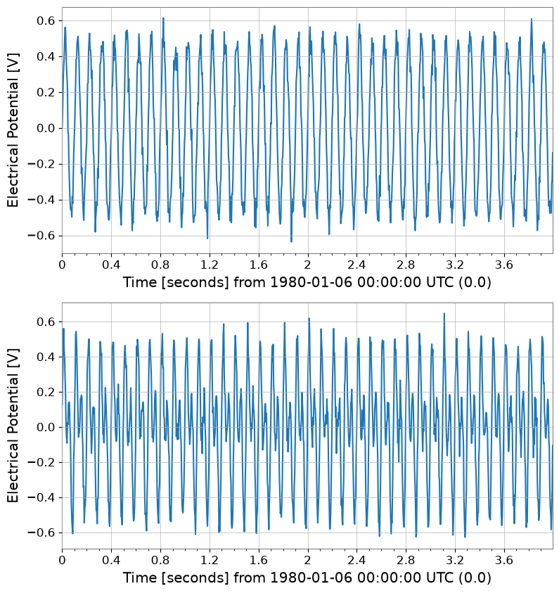
Sample Axis Editing#
diff/padreturnTimeSeriesMatrixcropcurrently returnsSeriesMatrix, so useview(TimeSeriesMatrix)to restore (contents are the same)
cropped = tsm.crop(start=1 * u.s, end=2 * u.s).view(TimeSeriesMatrix)
print("cropped", type(cropped), cropped.shape, "span", cropped.span)
cropped.plot(subplots=True, xscale="seconds")
diffed = tsm.diff(n=1)
print("diffed", diffed.shape, "dt", diffed.dt)
diffed.plot(subplots=True, xscale="seconds")
padded = tsm.pad(50)
print("padded", padded.shape, "t0", padded.t0)
padded.plot(subplots=True, xscale="seconds");
cropped <class 'gwexpy.timeseries.matrix.TimeSeriesMatrix'> (2, 2, 256) span (<Quantity 1. s>, <Quantity 2. s>)
diffed (2, 2, 1023) dt 0.00390625 s
padded (2, 2, 1124) t0 -0.1953125 s
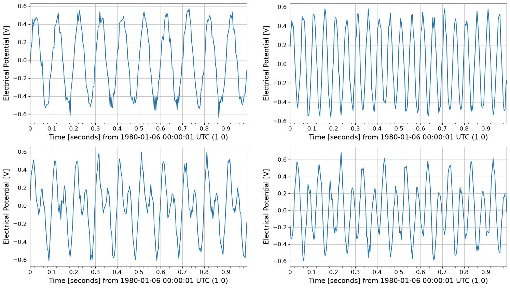
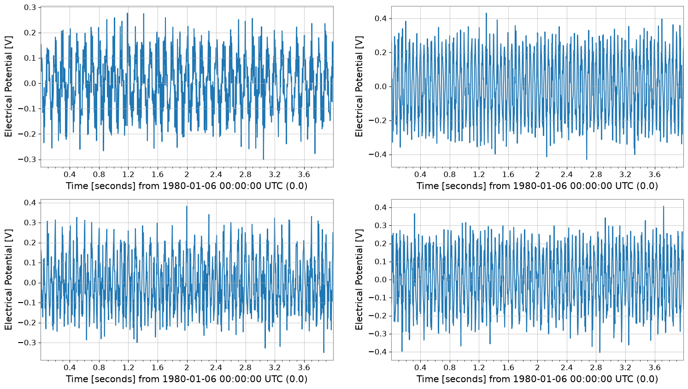
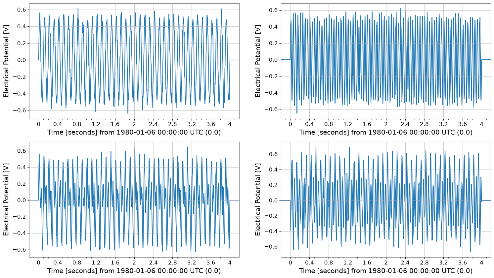
Time-Domain Processing (Element-wise Application of TimeSeries Methods)#
TimeSeries methods (detrend, bandpass, resample, etc.) are applied element-wise to the matrix.
detr = tsm.detrend("constant")
bp = detr.bandpass(5, 40)
rs = bp.resample(128)
print("original", tsm.shape, "sample_rate", tsm.sample_rate)
print("bandpass", bp.shape, "sample_rate", bp.sample_rate)
print("resample", rs.shape, "sample_rate", rs.sample_rate)
bp.plot(subplots=True, xscale="seconds")
rs.plot(subplots=True, xscale="seconds");
original (2, 2, 1024) sample_rate 256.0 Hz
bandpass (2, 2, 1024) sample_rate 256.0 Hz
resample (2, 2, 512) sample_rate 128.0 Hz
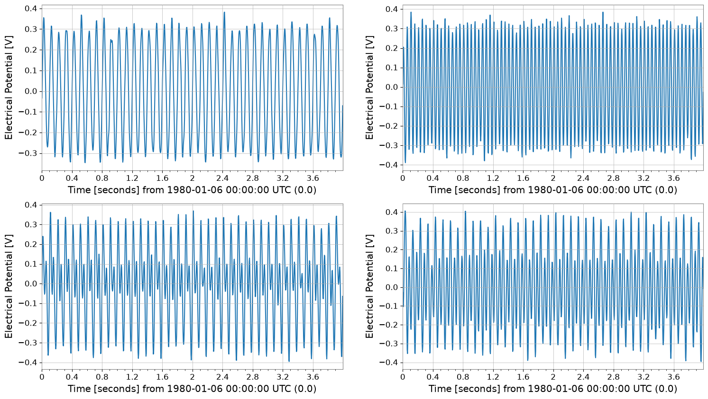
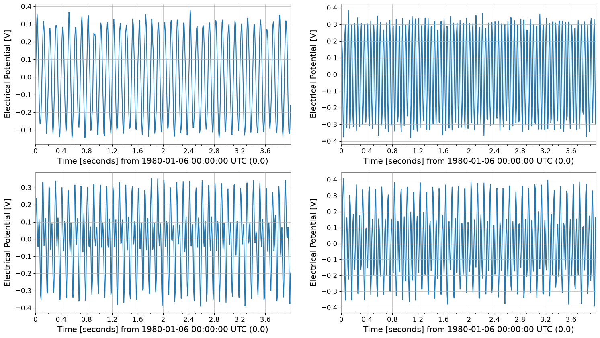
Missing Value Imputation#
Impute missing values (NaN) in the matrix. Applied to each channel separately.
# Create data with missing values (for demo)
tsm_miss = tsm.copy()
# Set some values to NaN in the first channel (note how to access: tsm[0,0] is a time series)
tsm_miss[0, 0].value[50:60] = np.nan
print("Before impute (Has NaN):", np.isnan(tsm_miss[0, 0].value).any())
# Impute (linear interpolation)
tsm_imp = tsm_miss.impute(method="interpolate")
print("After impute (Has NaN):", np.isnan(tsm_imp[0, 0].value).any())
Before impute (Has NaN): False
After impute (Has NaN): False
Preprocessing: Standardization and Whitening#
Useful as preprocessing for multivariate analysis.
# Standardize: Scale to mean 0, variance 1
tsm_std = tsm.standardize(method="zscore")
# Whiten: Remove inter-channel correlation (covariance)
# Use PCA to decorrelate
tsm_white, w_model = tsm_std.whiten_channels(return_model=True)
print("Standardized shape:", tsm_std.shape)
print("Whitened shape:", tsm_white.shape)
Standardized shape: (2, 2, 1024)
Whitened shape: (4, 1, 1024)
Decomposition (PCA / ICA)#
Efficient dimensionality reduction or source separation.
# Principal Component Analysis (PCA)
# Dimensionality reduction (e.g., 3 channels -> 2 principal components)
n_comp = min(2, tsm.shape[0])
pca_scores, pca_res = tsm_std.pca(n_components=n_comp, return_model=True)
print("PCA Scores shape:", pca_scores.shape)
print("Explained variance ratio:", pca_res.explained_variance_ratio)
pca_scores.plot()
plt.show()
plt.close()
# Independent Component Analysis (ICA)
# Blind Source Separation
ica_sources = tsm_std.ica(n_components=n_comp, random_state=42)
print("ICA Sources shape:", ica_sources.shape)
ica_sources.plot()
plt.show()
plt.close()
PCA Scores shape: (2, 1, 1024)
Explained variance ratio: [0.57128681 0.41742564]
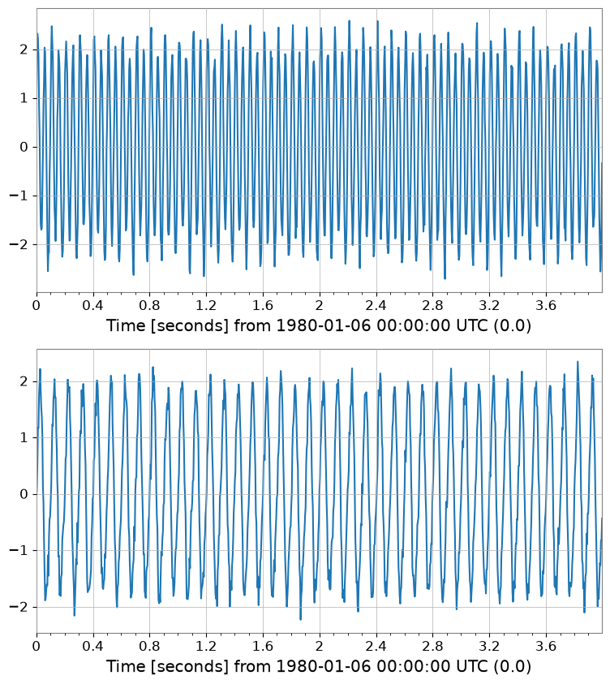
ICA Sources shape: (2, 1, 1024)
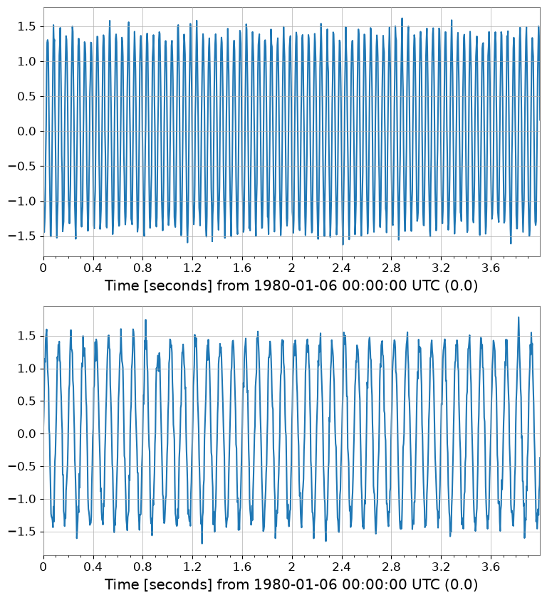
Interoperability Introduction#
Data can be passed to external libraries such as PyTorch.
try:
# Convert to PyTorch Tensor
import torch
_ = torch
tensor = tsm.to_torch()
print("Converted to PyTorch:", tensor.shape)
except ImportError:
print("PyTorch not installed")
PyTorch not installed
Spectral Analysis (FFT / PSD / ASD)#
fft/psd/asd return FrequencySeriesMatrix.
fft = tsm.fft()
print("fft", type(fft), fft.shape, "df", fft.df, "f0", fft.f0)
psd = tsm.psd(fftlength=1, overlap=0.5)
asd = tsm.asd(fftlength=1, overlap=0.5)
print("psd", psd.shape, "unit", psd[0, 0].unit)
print("asd", asd.shape, "unit", asd[0, 0].unit)
asd.plot(subplots=True)
plt.xscale("log")
plt.yscale("log")
fft <class 'gwexpy.frequencyseries.matrix.FrequencySeriesMatrix'> (2, 2, 513) df 0.25 Hz f0 0.0 Hz
psd (2, 2, 129) unit V2 / Hz
asd (2, 2, 129) unit V / Hz(1/2)
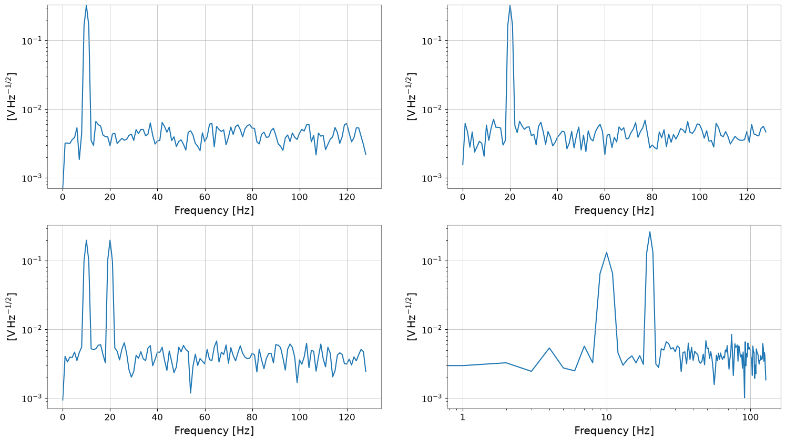
Bivariate Spectral Analysis (Coherence Example)#
TimeSeriesMatrix.coherence(other) computes coherence element-wise and returns FrequencySeriesMatrix.
Passing a
TimeSeriesasothercompares “all elements vs. the same reference”Passing a
TimeSeriesMatrixasotherrequires matching shape (Nrow, Ncol)
ref = tsm[0, 0]
coh = tsm.coherence(ref, fftlength=1, overlap=0.5)
print("coherence", type(coh), coh.shape, "unit", coh[0, 0].unit)
coh.plot(subplots=True)
try:
_ = tsm.coherence(tsm[:, :1], fftlength=1)
except Exception as e:
print("shape mismatch ->", type(e).__name__, e)
coherence <class 'gwexpy.frequencyseries.matrix.FrequencySeriesMatrix'> (2, 2, 129) unit coherence
shape mismatch -> IndexError index 1 is out of bounds for axis 1 with size 1
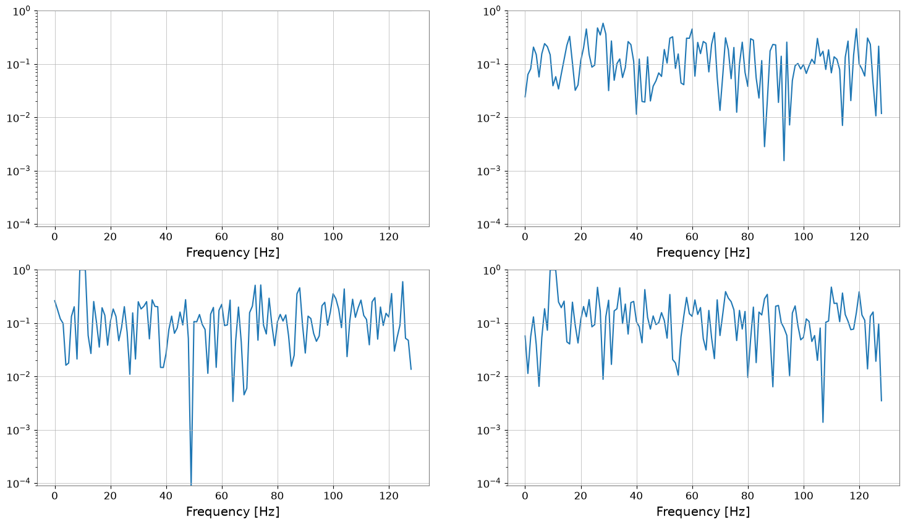
Display Methods: repr / plot / step#
repr: Text display_repr_html_: In notebooks,display(tsm)shows a table formatplot/step: Direct plotting with class methods
print("repr:\n", tsm)
display(tsm)
tsm.plot(subplots=True, xscale="seconds")
tsm.step(where="post", xscale="seconds");
repr:
SeriesMatrix(shape=(2, 2, 1024), name='demo')
epoch : 0.0 s
x0 : 0.0 s
dx : 0.00390625 s
xunit : s
samples : 1024
[ Row metadata ]
name channel unit
key
r0 row0
r1 row1
[ Column metadata ]
name channel unit
key
c0 col0
c1 col1
[ Elements metadata ]
unit name channel row col
0 V ch00 X:A 0 0
1 V ch01 X:B 0 1
2 V ch10 Y:A 1 0
3 V ch11 Y:B 1 1
SeriesMatrix: shape=(2, 2, 1024), name='demo'
- epoch: 0.0 s
- x0: 0.0 s, dx: 0.00390625 s, N_samples: 1024
- xunit: s
Row Metadata
| name | channel | unit | |
|---|---|---|---|
| key | |||
| r0 | row0 | ||
| r1 | row1 |
Column Metadata
| name | channel | unit | |
|---|---|---|---|
| key | |||
| c0 | col0 | ||
| c1 | col1 |
Element Metadata
| unit | name | channel | row | col | |
|---|---|---|---|---|---|
| 0 | V | ch00 | X:A | 0 | 0 |
| 1 | V | ch01 | X:B | 0 | 1 |
| 2 | V | ch10 | Y:A | 1 | 0 |
| 3 | V | ch11 | Y:B | 1 | 1 |
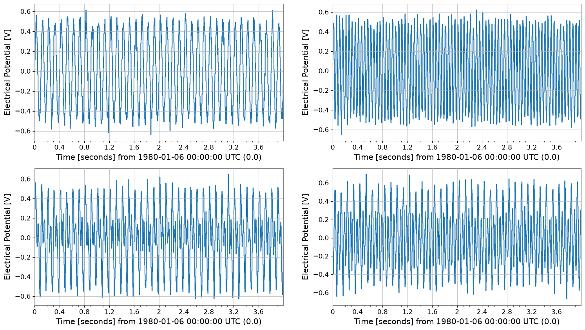
Summary#
TimeSeriesMatrixpreserves TimeSeries-compatible axis information (dt/t0/times) and element metadata while enabling batch processing as a matrix.Time-domain processing (detrend/bandpass/resample, etc.) and spectral analysis (asd/psd/coherence, etc.) can be applied element-wise in batches.
First extract a
TimeSerieswithtsm[i, j]to check behavior, then once familiar, process the entire matrix for convenience.